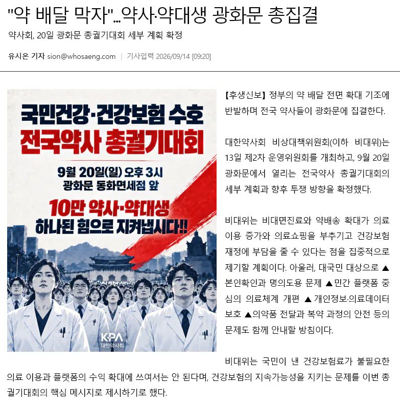

옆나라 일본은 무려 아마존에 처방약 온라인 판매를 2년전부터 했음 ㅋㅋ
갈라파고스 ON

옆나라 일본은 무려 아마존에 처방약 온라인 판매를 2년전부터 했음 ㅋㅋ
갈라파고스 ON
그와중에 포스터는 ai로 그렸네. 설득력 ㅈㄴ 떨어져보여
지들 밥그릇 지키겠다는거지
보약의 민족, 약이요, 쿠팡필즈
저런건 일본이 확실하게 앞서나가는 거 같네. 드럭스토어도 오래전부터 도입하기도 했고.
삼전부터 시작해서 별 말같지도 않은걸로 땡깡부리려 하네 애미뒤진 씨발것들
성분명처방도 안되는데 약배달이 되겠어ㅋㅋ
그래서 약사들이
파업해서 뭐할건데?
이건 모두에게 뭐가 이득이 되는지
보고 판단할 문제인듯
비대면 처방 조제 배송 무조건 건보 더 잡아먹을건데 좋다고 찬성하네 ㅋㅋㅋ 다들 일년에 병원 몇번감? 건보료 내는만큼 혜택도 제대로 봇보는데 건보료 오른다고 지랄할때는 언제고 이런건 편하다고 찬성하네 ㅋㅋㅋㅋㅋㅋㅋ 멍청이들임?? ㅋㅋㅋㅋ